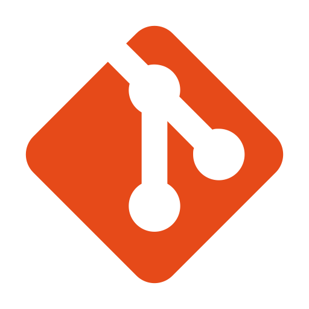

Todos os projetos que inicio, utilizo a ferramenta GIT, para manter versões e rastreabilidade de meus códigos, assim ganho em segurança e agilidade.
O projeto em questão esta hospedado no github, caso tenha interesse em verificar, basta clicar no logo do git.